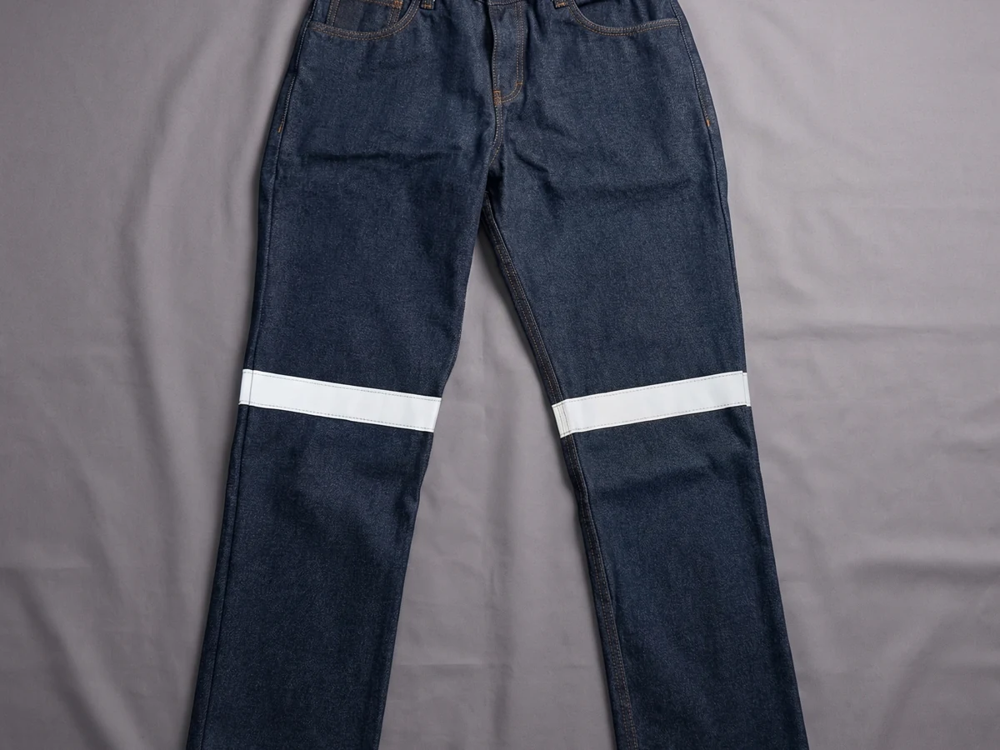
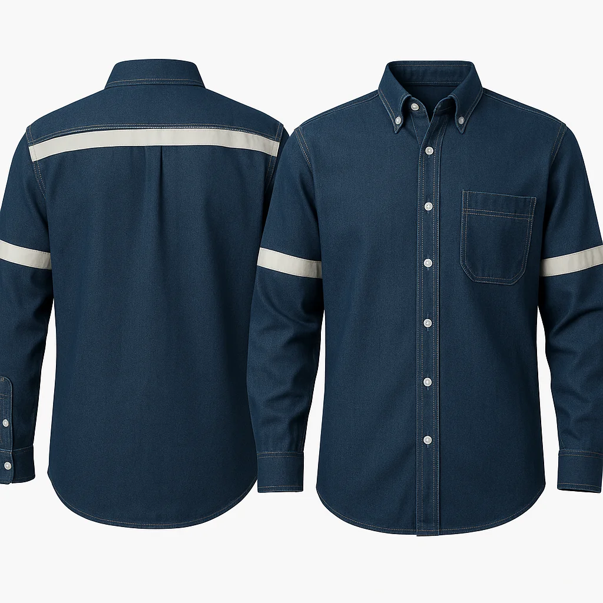
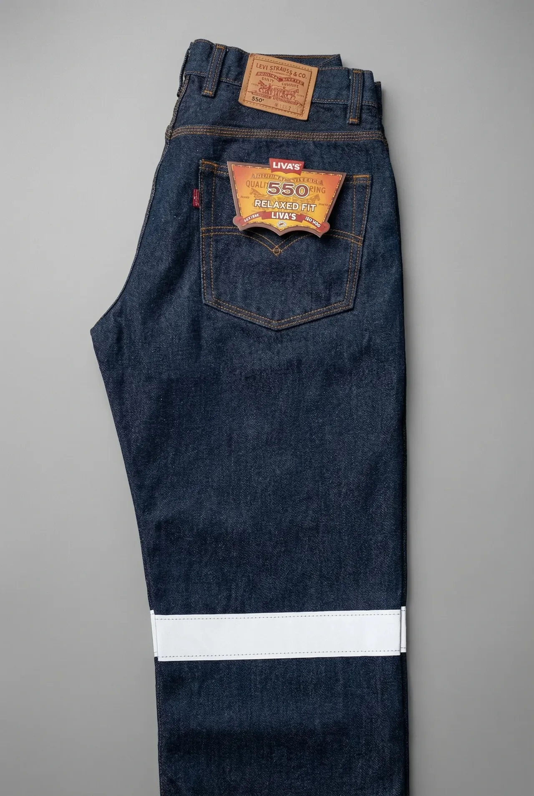
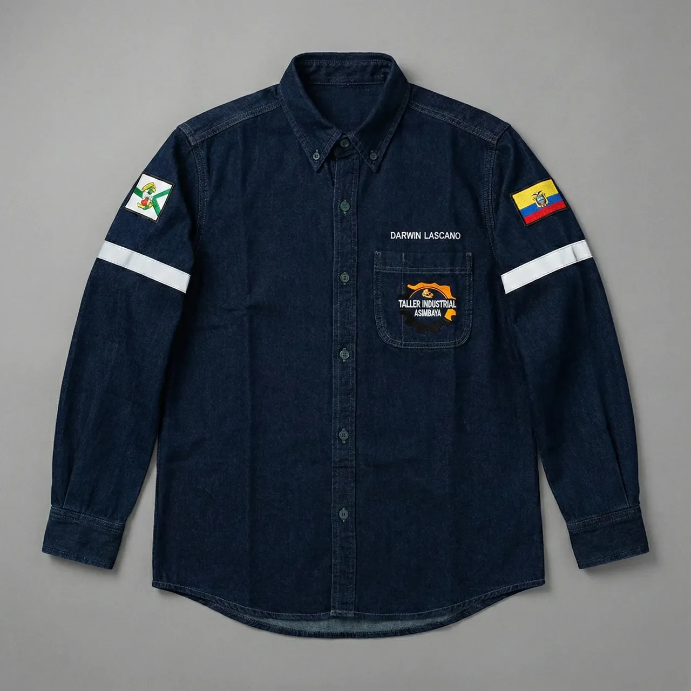

Desde $9
Pantalones de trabajo
Jean 14oz, 12oz, stretch y económico
Precio de fábricaVer categoría →
Fabricamos ropa de trabajo industrial en nuestro taller de Pelileo desde 2010: pantalones de jean, camisas con cinta reflectiva, chalecos, camisetas, buzos y uniformes completos. Vestimos empresas de construcción, talleres, metalmecánica, logística, agroindustria y servicios en todo el país. Al comprar directo a fábrica pagas precio de taller, con tallas de la 26 a la 46 y reposición durante todo el año.
Cada categoría reúne los modelos disponibles, la comparativa entre ellos y la tabla de tallas.

Jean 14oz, 12oz, stretch y económico


Antifluidos y gabardina, con reflectivo

Jersey y piqué, camiseta y buzo




Enterizo con cierre y tipo peto con tirantes, en jean 14oz o gabardina

Casaca en jean o gabardina, con reflectivo y bordado del logo
Dotación completa con precio por persona y bordado incluido

Patronaje femenino real, no tallas de hombre reducidas
Mandiles, filipinas y prendas que repelen líquidos

Gorras bordadas, mandiles y cubremangas para completar la dotación
Comprar ropa de trabajo para una empresa no se parece a comprar ropa. La decisión no la toma quien la usa, el presupuesto es por persona y el error se multiplica por la cantidad de trabajadores. Estas son las cuatro decisiones que definen el resultado.
El gramaje es el dato que más predice cuánto va a durar un pantalón. Las 14 onzas son el estándar para obra, taller y metalmecánica; las 12 onzas rinden en bodega, logística y mantenimiento; por debajo de eso la prenda sirve para uso liviano y poco más. En camisa el criterio cambia: pesa más la transpirabilidad y el acabado, porque una camisa incómoda se deja de usar antes de romperse.
La fibra importa tanto como el peso. El algodón 100% es obligatorio donde hay chispa, soldadura o calor radiante, porque el sintético se funde y se adhiere a la piel. Y busca siempre tela sanforizada: es un pretratamiento que estabiliza el tejido para que la prenda no encoja con los lavados, lo que en una dotación de cincuenta personas evita tener que cambiar tallas a mitad de año.
Si el trabajador comparte espacio con vehículos, montacargas o tráfico, o si su turno empieza o termina con poca luz, necesita ser visible. La forma más sólida es que la prenda base ya traiga la cinta incorporada, porque un chaleco se olvida en la camioneta. Revisa la categoría de ropa de trabajo de alta visibilidad para ver todas las opciones juntas.
La base es un juego por trabajador al año, que es además el mínimo que exige la ley ecuatoriana en materia de dotación. En puestos de mucho desgaste conviene calcular dos juegos, o uno más un fondo de reposición del 10% en las tallas centrales, que son las que más rotan cuando entra personal nuevo. Levantar bien las tallas es el paso que más retrasa los pedidos: nuestra guía de tallas lo resuelve en una sesión.
No exigimos mínimos rígidos en los modelos del catálogo: puedes pedir según lo que necesites y reponer unidades sueltas durante el año. El mínimo de 100 prendas por modelo aplica solo si fabricamos un diseño desde cero. El plazo se compone de producción más envío: de 1 a 3 días hábiles de transporte a cualquier ciudad, y un tiempo de fabricación que depende del volumen y del bordado.
| Tela | Gramaje | Resistencia | Transpirabilidad | Uso recomendado |
|---|---|---|---|---|
| Jean Gregori 14oz | 14 oz | Muy alta | Media | Obra, taller, metalmecánica |
| Jean Gregori 12oz | 12 oz | Alta | Media | Bodega, logística, mantenimiento |
| Jean stretch | Media, con elastano | Alta | Media | Puestos que exigen movimiento |
| Mistral (camisa) | 7.5 oz | Alta para camisa | Alta | Camisa de obra y vía pública |
| Gabardina | Media | Alta | Media | Chalecos estructurados |
| Antifluidos | Media | Alta, repele líquidos | Baja | Exteriores y trabajo húmedo |
| Piqué | Ligera | Media | Alta | Polos y buzos institucionales |
| Jersey | Ligera | Media | Muy alta | Camisetas y buzos de uso diario |
Valores orientativos para comparar entre líneas. El detalle técnico de cada tela está en la ficha del producto.
Cada sector tiene su página con la dotación recomendada por rol y el costo anual por trabajador.
Cuadrillas de campo en la Amazonía, con reflectivo y reposición rápida de tallas.
Pantalón 14oz y camisa con reflectivo para cuadrillas en vía pública y altura.
Algodón 100% de gramaje alto, la fibra correcta donde hay chispa y esmeril.
Uniformes cómodos y presentables para turnos largos de carga y picking.
Dotaciones de campo y poscosecha con lavado frecuente y reposición continua.
Dotaciones con factura, tallas completas y procesos de compra formales.
Envío por Servientrega con tarifa plana de $7, seguro incluido y entrega en 1 a 3 días hábiles.
| Prenda | Por mayor | Unitario | Tallas extras |
|---|---|---|---|
| Pantalón Premium Gregori 14oz | $12.00 | $15.00 | $14 / $16 |
| Pantalón Gregori 12oz | $10.00 | $14.00 | $11 / $15 |
| Pantalón Stretch | $12.00 | $15.00 | $14 / $16 |
| Pantalón Económico Empresarial | $9.00 | Sin venta unitaria | $10.00 |
| Camisa Industrial Mistral | $13.00 | $15.00 | $14 / $17 |
| Camiseta Jersey | $7.00 | $7.00 | +$1 con reflectivo |
| Camiseta Polo Piqué | $9.00 | $9.00 | +$1 con reflectivo |
| Buzos jersey y piqué | $9.00 – $10.00 | $9.00 – $10.00 | +$1 con reflectivo |
| Bordado de logotipo | Desde $2.00 | Desde $2.00 | Por prenda |
Los precios por mayor corresponden a tallas normales. Las tallas extras consumen más tela y tienen un valor distinto.
Filtra por línea para ver cada modelo con su precio y sus tallas.
Pelileo es la capital ecuatoriana del jean y ahí está nuestro taller. Trabajamos jean Gregori de 14 y 12 onzas, 100% algodón de Textiles Vicuña, con triple costura y herrajes inoxidables.
El gramaje alto aguanta construcción, bodega y taller. Es nuestro pantalón de trabajo en jean más vendido.
Ver pantalón jean 14ozMisma tela Gregori en versión liviana, para clima cálido y jornadas de menor desgaste. Bajo pedido.
Ver pantalón jean 12ozLa misma tela y los mismos refuerzos, en overol enterizo, peto y chompa de trabajo. Fabricación bajo pedido.
Ver overoles de trabajoLa ropa de trabajo industrial está construida para resistir el trabajo: telas de gramaje alto, costuras reforzadas en las zonas de esfuerzo y herrajes que no se oxidan. Un uniforme común identifica; una prenda industrial además protege del desgaste, la grasa y el roce, y aguanta el lavado repetido sin perder talla ni color.
Un juego básico de pantalón y camisa arranca alrededor de $25 por persona a precio de fábrica, según los modelos y las tallas. A eso se le suma el bordado del logotipo desde $2 por prenda. Para dotaciones grandes el costo por trabajador baja según el volumen.
Para los modelos del catálogo no exigimos un mínimo rígido: el precio por mayor aplica según el volumen del pedido. El mínimo de 100 prendas por modelo se aplica solo cuando fabricamos un diseño personalizado desde cero.
Jean de 14 onzas en pantalón y algodón sanforizado en camisa. El gramaje alto resiste la abrasión del taller y la obra, y el algodón 100% es además la fibra correcta cuando hay chispa o calor radiante, porque el sintético se funde.
El tiempo depende del volumen y de si el pedido lleva bordado; el envío añade de 1 a 3 días hábiles por Servientrega a cualquier ciudad. Escríbenos con la cantidad y te damos una fecha real, no un plazo genérico.
Fabricamos. Cortamos y confeccionamos en nuestro taller de Pelileo desde 2010, con telas Gregori y Mistral de Textiles Vicuña. Por eso podemos reponer tallas sueltas durante el año y ajustar modelos, cosa que un importador no puede hacer.
Sí, emitimos factura para compras empresariales y trabajamos con procesos formales de compra. Si necesitas documentación previa al despacho, avísanos al cotizar y la preparamos con anticipación.
Sí, desde 100 prendas por modelo. Partimos de tu diseño, tus colores o una prenda de muestra que nos envíes. Para cantidades menores, lo práctico es personalizar un modelo del catálogo con bordado.
Cuéntanos qué prendas necesitas, para cuántas personas y en qué ciudad. Te respondemos el mismo día con precio por volumen, tallas disponibles y plazo real de entrega.